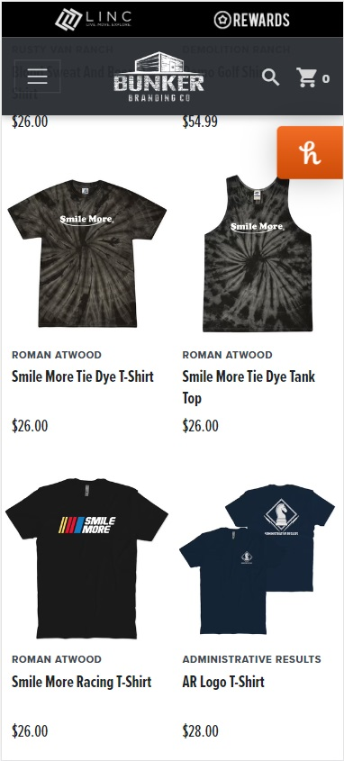
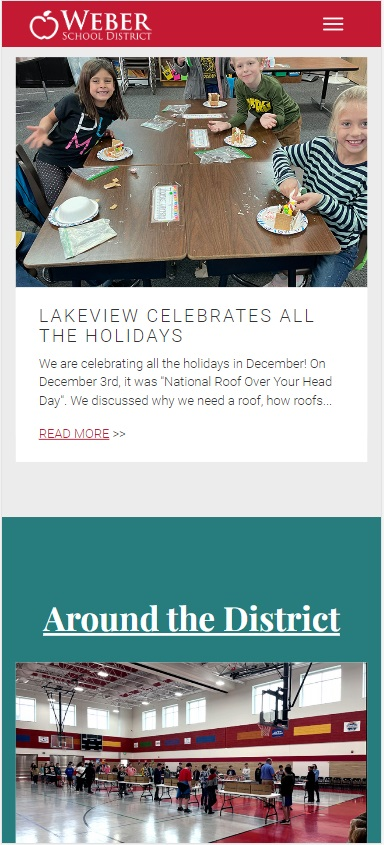
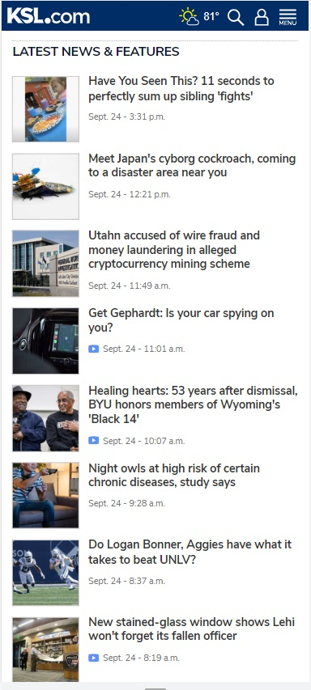

PARC: Proximity
Bunker Branding
https://www.bunkerbranding.com/
With many items being sold on the site, the proximity of the price tags to the image of the product is important. Because there isn't whitespace between the products to differentiate them the price tags are what keep them identified in the same unit.
Constrast
Weber School District
The color of the text over a white background is darker to be easier to read. On different sections the text is white standing out. The darker backgrounds with white text are usually headings.
Repetition
KSL News
The articels after the headline stories are all formatted in the same way. The image is on the left and the story headline is to the right. The iimage size is the same for each story. This pattern is quickly established and the end user starts to expect it.